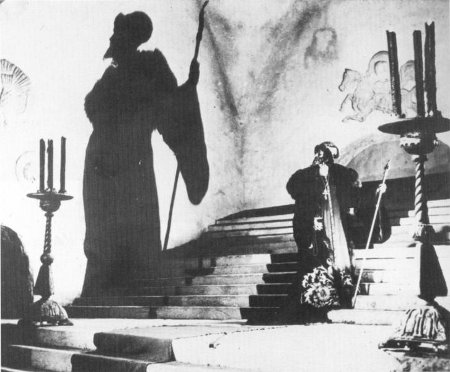

Eisenstein'ın Korkunç İvan filminden bir sahne: İvan'ın gölgesi Rusya'nın üzerine düşüyor.
Özellikle, Osmanist ve Slavist olmayan Batı Avrupa tarihçiliğinde Doğu Avrupa'nın iki büyük imparatorluğu belirli boyutlar ve söylemle değerlendirilir. Bu gibi değerlendirmelerde autocracy deyimi, çok kere tyranny ve despotisme oriental kavramlarıyla küçümser bir kimlik atfedilerek ele alınır. Milletleri tasvir eden bir 18. asır Avusturya halk resminde, Türklerin hükümdarı bir tyrant, Moskova Çarı ise bir gönüllü olarak tasvir edilir.[174] Gönüllü sözü ilhamını; Rürikler devri sonundaki karışık ve kanlı dönemde, böyle kritik ve tehlikeli makama geçen birinden almış gibidir: Çar Boris Godunov ve ilk Romanov Mihail Fedoroviç... Aydınlanma'dan bu yana otokrasinin siyasal bir kurum olarak ne olduğunun anlaşıldığını söylemek de pek zordur. Aslında 16. asrın Rusya'sı ile Osmanlı İmparatorluğu'nun ilişkilerini, ikisinin sonraki asırlardaki ilişkileriyle mukayese edemeyiz. Ancak bu iki uzak sistemin yakınlıkları da vardır. Farklılıklar kadar ilginç benzerlikleri de görmek mümkündür. Kanunî Süleyman'la İvan Grozniy'i mukayese etmenin yararlı tarafı da budur. Bunlardan birincisi "Muhteşem" unvanıyla, diğeri biraz kolaycı bir tercümeyle "korkunç" veya "müthiş" diye adlandırılır.
15. yüzyıl ortalarında, Şark Ortodoks Kilisesi'ne bağlı kavimlerin çoğu Osmanlı egemenliğindeydi. İkinci (fakat tek hükümran Ortodoks) olarak Rusya Çarlığı'nı görüyoruz. II. Mehmed (Fatih) Doğu Kilisesi'ne dengeli bir politikayla, Ortodoks cemaatin üzerinde önemli yönetim hakları bağışladı. Patrik olarak Batı Roma Kilisesi'nin onulmaz düşmanı Gennadios Sholarios'u tayin etti ve emperyal protokolde ve kendisine tâbi Hıristiyanların yönetiminde Bizans'ta görülmeyen hakları bağışladı. Bulgar ve Sırp Kiliseleri autokefal statülerini kaybetmiş ve bu cemaatler de İstanbul Patriği'nin malî, idarî, eğitsel yönetimine bırakılmışlardır. Patrikhane, Ortodoks tebaa üzerinde hukukî ve ruhanî otoriteydi.
Bu dönemde, Rusya'da Bizans veraseti siyasal edebiyatın ana konusudur. Rürikler, "Vladimir Manomoh"tan beri Bizans hanedanlarıyla akrabadır. En son III. İvan Paleolog Hanedanı'ndan gelin almıştı (Roma'dan gelen son imparatorun yeğeni Sofya Paleologina) ve çar unvanını bu nedenle kullanmaktaydı. Bu unvanı, Avrupa ve Osmanlılar ancak 17. asırda tanımıştır. Fetih sırasında suya atılan Bizans tacı ve emperyal âsanın yüzerek Rusya'ya ulaştığı gibi rivayetler kroniklerde ve halk inanışında yer almaktadır. Ortodoks dünyanın gözü 16. yüzyıldan beri Rusya'dadır. Balkan Slavları içinde bazı irredantist fikirler Rusya'ya yöneliktir. Bu bakımdan erken bir devir olmasına rağmen İvan Grozniy'nin (müthiş yerine bu tabiri kullanacağız) "III. Roma, Moskova'dır" sloganı aslında onun icadı sayılamaz. Bununla birlikte, 16. yüzyılın şartları içinde Moskova ve İstanbul rekabeti gibi bir olaydan söz etmek de ciddi sayılmaz. İki hükümdara atfedilen autocrat niteliğinin de, aradaki paralelliklere rağmen, farklı ölçüler içinde değerlendirilmesi gerekmektedir.
Hükümdarlığın dış görünüşüne ve saray hayatına baktığımızda, İvan Grozniy devrinde de Süleyman'ın hayatı kadar renkli bir Kremlin görülür. Yeniçağ Avrupa'sı saraylarından farklı bu renklilikte; Rusya'nın dünya merkezciliği iddiası ve Süleyman'ın sarayının İslâm dünyasının en büyük merkezi olması gibi bir durumun yarattığı temsilî işlevin bunda önemli rolü vardır. Saray yaşayışında ve protokolünde ortak bir mazinin, Asyaî geleneklerin izlerine rastlanır. Hatta bu Asyaî geleneklere İvan Grozniy'nin sarayında daha çok rastlanır. Çarın tacı, Altınordu'dan kalma bir geleneği yansıtır. Çarın elbiseleri, bazen mezatla zadegâna (dvoryanstvo) satılır. Madalya yerine çarın kaftan hediye etmesi gibi gelenekler vardır. İvan Zabelin'in Domaşnii Bi't Russkih Zare'i adlı eserinde bu gibi gelenekler anlatılır.[175] IV. İvan'ın bu alandaki reformları da, tıpkı Kanunî devri protokolünün 18. yüzyıl ortalarına kadar yaşaması gibi, esasta Büyük Petro'ya kadar kaldı. Ancak IV. İvan protokolü geniş ölçüde kendi düzenlemişken, Kanunî Süleyman geniş ölçüde dedelerinden miras aldı. Kanunî devrinde sadelik bitmiş, sultan, tebaasının karşısına ihtişam içinde çıkmıştır ve halk da hükümdarlarında bu ihtişamı aramaya, talep etmeye başlamıştır. Kuşkusuz, İvan Grozniy devrinde, Rusya 18. yüzyıl Romanovlarının ihtişamını ve Avrupa'daki saygınlığını henüz düşleyemezdi bile. Üstelik Rus çarlarının "Gosudor, Tsar Vsehrosiei, Samoderjetz, Veliki Knez" gibi unvanları sonradan beynelmilel kabul gördü. Novaselskii'nin belirttiği bir nokta, Prof. İnalcık tarafından etraflıca incelenmiştir.[176] Kırım Hanları 1640'larda Rus çarlarının "Âlempenah" karşılığı olan unvanlarını tanımadılar. Moskova elçilerinin ısrar ve taleplerine rağmen, Kırım Hanları, Osmanlı Padişahı'na özgü bu sıfatı, çarlar için kullanmadılar. Bunun yerine, "Cümle Ulusunun Padişahı" yahut "Uluğ ve Küçük ve Ak Rusnun Penahı" yazılırdı. Bu Ukrayna, Belarus ve Büyük Rusya, Çin veya Bütün Rusya'nın çarı gibidir. Bir başka benzerlik veraset sistemidir. Şayet iki ve daha fazla oğul varsa, Rus prenslerinin taç giyene kadarki hayatı ve politik huzursuzluk, Osmanlı sarayından daha farklı değildir. Süleyman tek erkek olarak kalma talihine ulaşmıştı. Sancak yönetiminden tahta çıktı. IV. İvan korkunç ve buhranlı bir çocukluk ve gençlik geçirdi. 1547'de çar olarak taç giyene kadar Osmanlı sarayındaki bir şehzadenin "kafes"teki hayatını yaşadı denebilir.